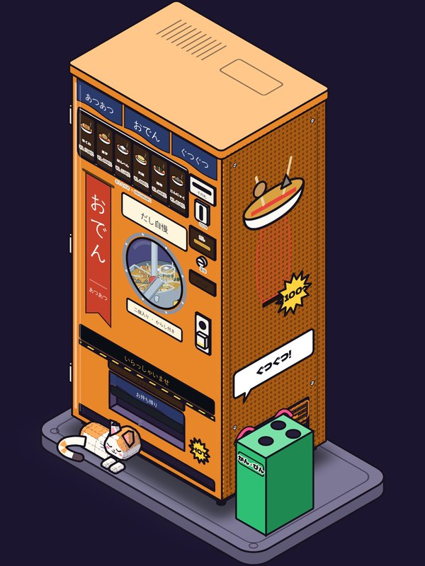
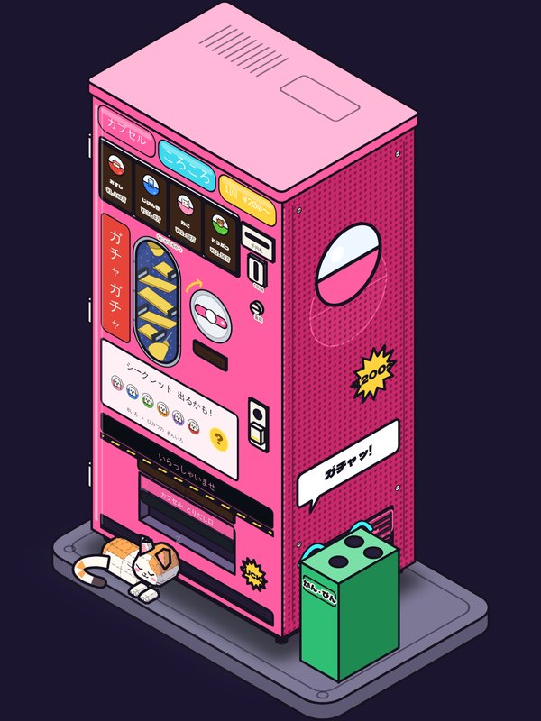
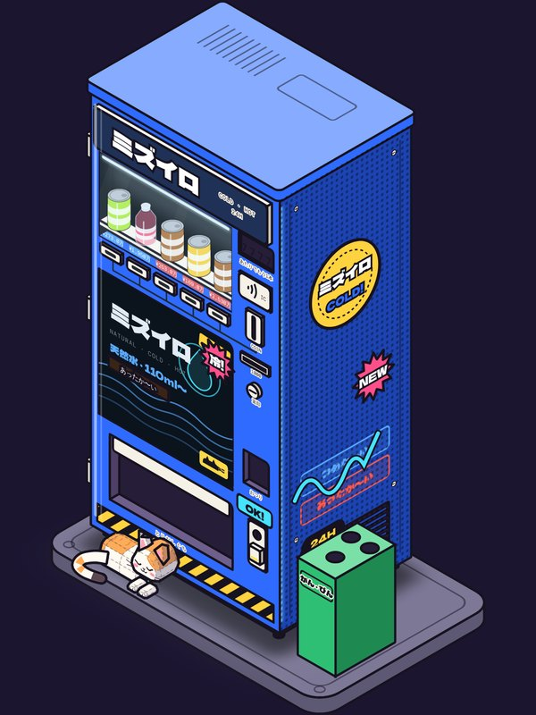
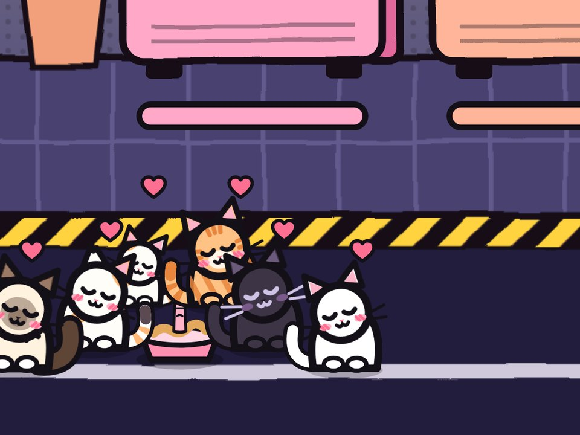

每一台都会动



猫会自己来串门
喂饱它们，它们会用自己的方式帮身边的机器，有的还会招来客人。它们随心情来，不一定每次都在。

预告片
常见问题
- 要钱吗？
- 免费下载，可以一直玩下去。商店里有几件一次买断的东西，没有订阅。
- 有广告吗？
- 没有广告，也不追踪你。
- 要联网吗？
- 不用，离线就能玩。开了 iCloud 会在你的设备之间同步存档。
- 支持哪些设备？
- iPhone，iOS 17 或更新。



喂饱它们，它们会用自己的方式帮身边的机器，有的还会招来客人。它们随心情来，不一定每次都在。
